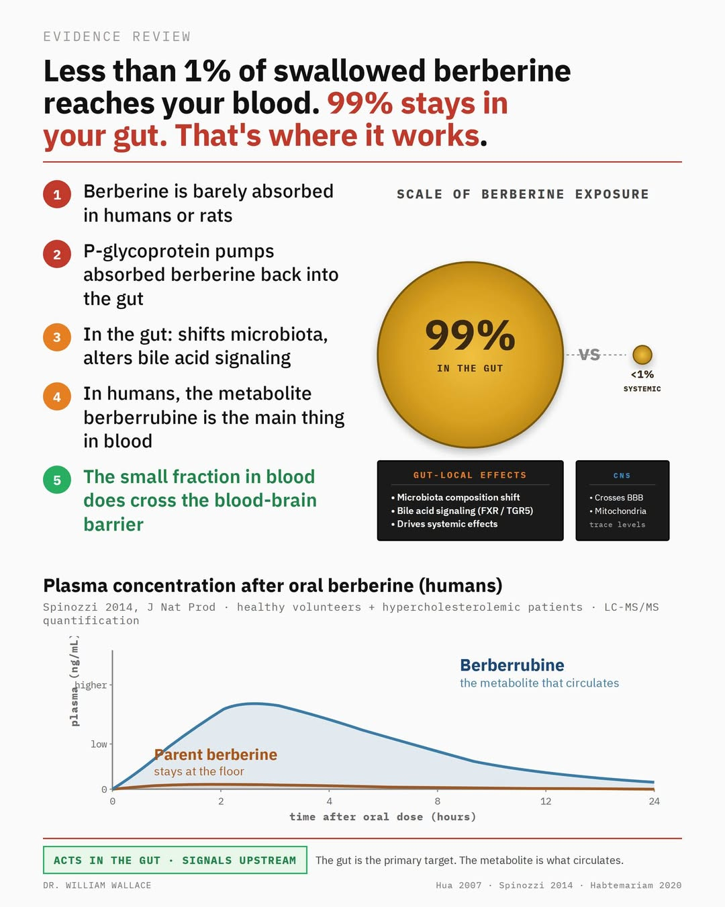

Less than 1% of berberine taken orally actually enters blood circulation.
This implies that berberine’s mechanism of action is primarily in the gut.
Despite what you may have heard online, berberine works against diabetes by modulating gut bacteria. That is its main mechanism of action.
This makes it very different from the way that metformin works. Berberine and metformin work by completely different mechanisms.
#berberineHD #microbiomeHD #metforminHD #diabetesHD
Berberine has one of the lowest oral bioavailabilities of any widely-used compound. Direct measurements in humans confirm what rat pharmacokinetics suggested: less than 1% of a swallowed dose reaches systemic circulation as parent berberine. The interesting question is how a compound with that pharmacokinetic profile produces measurable clinical effects in glucose and lipid metabolism.
Spinozzi and colleagues (2014, J Nat Prod) measured plasma concentrations after oral berberine in healthy volunteers and hypercholesterolemic patients using LC-MS/MS. The parent compound was barely detectable. The dominant species in plasma was berberrubine, a metabolite produced by demethylation. Berberrubine is more lipophilic than parent berberine and absorbed more efficiently. What circulates after an oral berberine dose is mostly the metabolite, not the original molecule. Hua and colleagues (2007, J Pharm Biomed Anal) confirmed the very low parent berberine concentrations in healthy human volunteers using a similar analytical approach. Both studies establish the same picture in humans that Chen and colleagues (2011, AAPS PharmSciTech) reported in rats with the often-cited 0.68% absolute bioavailability number.
The pharmacological reason for this is well-characterized. Berberine is a quaternary ammonium alkaloid, permanently charged at physiological pH. It does not cross intestinal epithelium efficiently. The fraction that does enter enterocytes is actively pumped back into the gut lumen by P-glycoprotein, an efflux transporter expressed on the apical surface of intestinal cells. The combination of poor passive permeability and active efflux keeps systemic exposure to a fraction of a percent.
This raises the central question. If clinical trials show meaningful effects on hemoglobin A1c, fasting glucose, and lipid profiles after oral berberine, but almost none of the dose reaches the bloodstream, where is it acting? Habtemariam and colleagues (2020, Pharmacological Research) reviewed the evidence and proposed that the gut itself is the primary site of action. Local intestinal concentrations of berberine after a typical oral dose are several orders of magnitude higher than plasma concentrations.
The 99% that stays in the gut interacts directly with the intestinal microbiota and with bile acid signaling pathways. Berberine modulates microbial composition, influencing the production of microbial metabolites that themselves enter the systemic circulation. Berberine also affects bile acid recycling through interactions with FXR and TGR5 receptors expressed in the gut and liver. Bile acid receptor signaling is a confirmed gut-to-systemic communication channel involved in glucose and lipid homeostasis.
The small fraction that does reach systemic circulation has additional pharmacology worth noting. Berberine and its metabolites can cross the blood-brain barrier despite being substrates for P-glycoprotein. Wang and colleagues (2021, Comparative Biochemistry and Physiology Part C) used a fluorescent berberine derivative in a zebrafish Parkinson's disease model and demonstrated direct BBB penetration with accumulation in neuronal mitochondria. The brain concentrations achievable from oral dosing are very low, but they are not zero. Whether those trace concentrations are pharmacologically relevant for cognition, mood, or neuroprotection in humans is an open question. The animal data are intriguing. The clinical translation is preliminary.
A few additional caveats. The Spinozzi 2014 finding that berberrubine dominates plasma exposure has implications that have not been fully worked out. Most of the in vitro mechanistic studies were done with parent berberine. The compound that actually reaches tissues in humans is mostly the metabolite. Whether the published mechanism work translates to in vivo activity depends on whether berberrubine has the same molecular targets as berberine, and the comparative pharmacology has not been thoroughly characterized. The clinical efficacy data come primarily from trials in type 2 diabetes (Yin and colleagues, 2008, Metabolism) and dyslipidemia, with modest sample sizes and mostly Chinese single-center designs. Gastrointestinal side effects are common, occurring in roughly a third of patients in the Yin trial, which is consistent with high local intestinal exposure to a bioactive compound.
What this establishes. Berberine is a poorly absorbed compound that produces clinical effects despite minimal systemic exposure. The mechanism is best understood as gut-local activity that signals upstream through microbiota modulation and bile acid receptor activation, with a small contribution from systemic activity of the parent compound and its metabolites. Reading berberine's pharmacology through the lens of plasma concentration alone misses where most of the drug action happens.
Chen et al., AAPS PharmSciTech, 2011
Hua et al., J Pharm Biomed Anal, 2007
Spinozzi et al., J Nat Prod, 2014
Yin et al., Metabolism, 2008
Habtemariam, Pharmacological Research, 2020
Wang et al., Comp Biochem Physiol C, 2021
